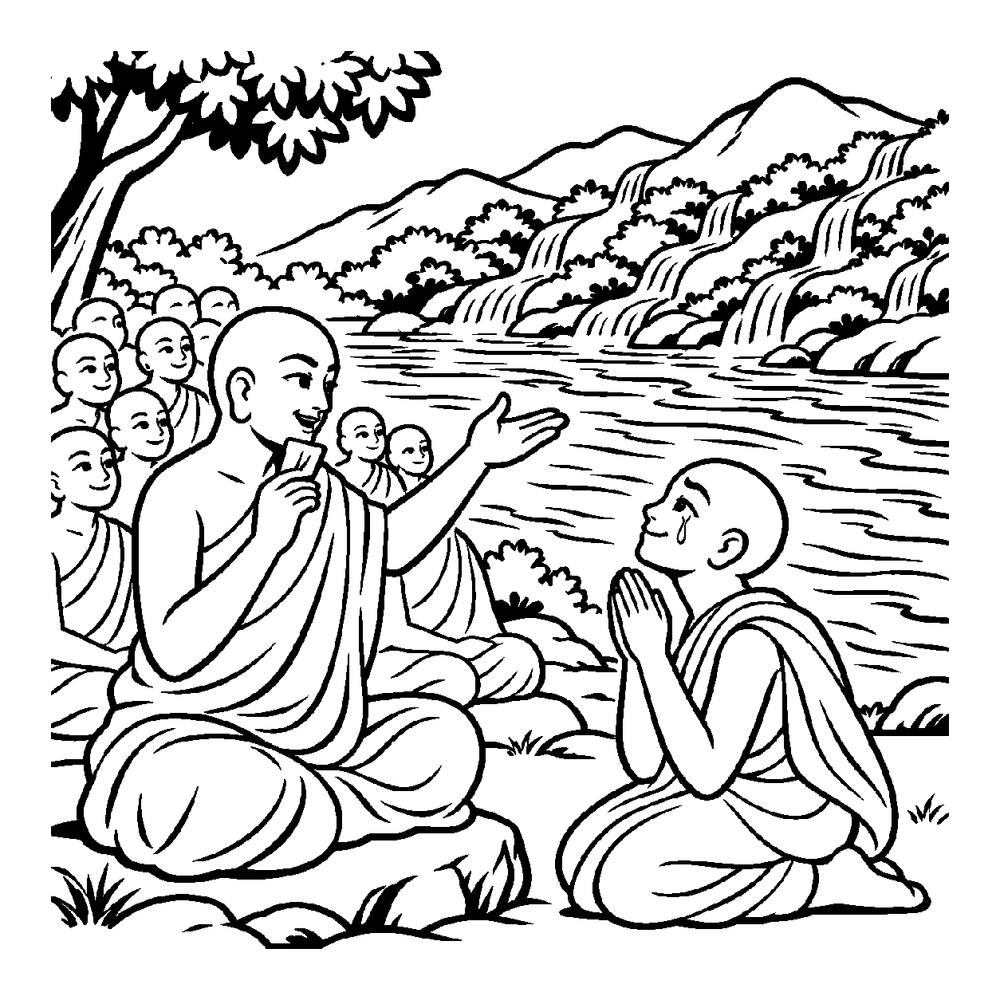

સીમાડે ઊભેલા એક ઘટાદાર વટવૃક્ષની ડાળીઓ અને પાંદડાંની વચ્ચે સેંકડો નાની-મોટી ચકલીઓ, કાબર અને પોપટ માળો બાંધીને કલરવ કરે છે. ગામના વૃદ્ધો કહે છે: "આ વડલાના ઉદરમાં આખું પંખીજગત સમાયેલું છે!" વાસ્તવમાં વડલો પુદ્ગલ છે અને પક્ષીઓ ચેતન છે; પરંતુ જ્યારે એક સમર્થ આચાર્ય કે સદ્ગુરુના વાત્સલ્ય અને શાસનછત્ર નીચે હજારો સાધકો, શિષ્યો અને શ્રાવકો જ્ઞાન અને સંયમની સાધના કરતા હોય, ત્યારે લોકસમાજમાં ભાવપૂર્ણ શૈલીમાં કહેવાય છે: "આ ગુરુદેવના ઉદરમાં હજારો શિષ્યો સમાયેલા છે, આચાર્યશ્રીના હૃદયમાં સમગ્ર સંઘ બિરાજે છે!" વાસ્તવમાં ગુરુદેવ પણ એક ચેતન આત્મા છે અને શિષ્યો પણ સ્વતંત્ર ચેતન આત્માઓ છે. સમાન ચેતન જાતિના એક આધારમાં સમાન ચેતન જાતિના આધેયોનો આવો વાત્સલ્યપૂર્ણ આરોપ કરવો તેને 'સ્વજાત્યાધારે સ્વજાત્યાધેયોપચારક વ્યવહાર' કહેવાય છે.
ભૌતિક દ્રષ્ટિએ કોઈ જીવના શરીરમાં બીજા જીવનું શરીર સમાઈ શકતું નથી (ગર્ભાવસ્થા સિવાય). પરંતુ અહીં 'ઉદર' કે 'હૃદય' શબ્દ વાત્સલ્ય, રક્ષણ, માર્ગદર્શન અને કરુણાના અર્થમાં પ્રયોજાય છે. જેમ માતા પોતાના ઉદરમાં બાળકને પ્રેમથી સંભાળે છે, તેમ સદ્ગુરુ પોતાના જ્ઞાન અને વાત્સલ્યના બળે હજારો શિષ્યોની સાધનાનું પાલનપોષણ કરે છે. સમાન ચેતન આત્માઓ વચ્ચેનો આ આધાર-આધેય સંબંધ શાસનની એકતા અને ગુરુશિષ્ય પરંપરાની ગરિમા દર્શાવવા માટે વ્યવહારમાં અત્યંત પ્રચલિત છે.
આ નય સાધકને સમજાવે છે કે ગુરુ પ્રત્યે સમર્પણ રાખીને શાસનમાં એકમેક થઈને રહેવું, પણ ભીતરમાં પ્રત્યેક આત્માની સ્વતંત્ર મોક્ષયાત્રાને ભૂલવી નહીં.
ગુરુ ઉદરે શિષ્યો વસે, વાત્સલ્ય તણો પ્રવાહ;
ચેતન આધારે ચેતના, જગમાં ધર્મ સલાહ.
સજાતીય સંબંધથી, પોષાયે સહુ સંઘ;
ઉપચાર દ્રષ્ટિ સમઝતાં, ચડે સાધના રંગ.
સાધકને સમજાવે છે કે ગુરુ પ્રત્યે સમર્પણ રાખીને શાસનમાં એકમેક થઈને રહેવું, પણ ભીતરમાં પ્રત્યેક આત્માની સ્વતંત્ર મોક્ષયાત્રાને ભૂલવી નહીં.

ધર્મક્ષેત્રના એક નવા યુવાન સાધુ શ્રવણકુમાર સંઘમાં જોડાયા હતા. સંઘમાં પાંચસો જેટલા મુનિઓ અને શિષ્યો હતા. શ્રવણકુમાર મનમાં વિચારતા હતા: "હું તો એક સ્વતંત્ર આત્મા છું. મારે મારી મુક્તિ માટે એકલા જ સાધના કરવી જોઈએ. તો પછી આ સંઘમાં જોડાઈને ગુરુદેવના શાસન નીચે રહેવાની શી જરૂર? શું હું ગુરુના છત્ર નીચે રહીને મારી સ્વતંત્રતા ગુમાવી રહ્યો છું?" તે એકાંત અને સંઘના સંબંધ વચ્ચે ગૂંચવાઈને સંઘ છોડીને જંગલમાં ભાગી જવાની તૈયારી કરવા લાગ્યા.
તે જ વખતે સંઘ એક વિશાળ ગંગા નદીના કિનારે પહોંચ્યો. પર્વતોમાંથી નાનાં નાનાં સેંકડો ઝરણાં ખળખળ વહેતાં આવીને ગંગાના વિશાળ પ્રવાહમાં ભળી રહ્યાં હતાં. આચાર્યશ્રીએ શ્રવણકુમારને પાસે બોલાવીને પૂછ્યું: "શ્રવણ! જો આ નાનું ઝરણું એકલું જંગલમાં વહ્યું હોત, તો શું થાત?" શ્રવણકુમારે કહ્યું: "ગુરુજી, રસ્તામાં જ રેતીમાં સુકાઈ ગયું હોત!" આચાર્યશ્રીએ કહ્યું: "વત્સ! સ્વજાત્યાધારે સ્વજાત્યાધેયોપચારક વ્યવહારને ઓળખ! જ્યારે ઝરણું ગંગામાં ભળે છે ત્યારે તે પોતાની સ્વતંત્રતા ગુમાવતું નથી, પણ ગંગાના આધારે વિશાળ સાગર સુધી સુરક્ષિત પહોંચી જાય છે! શાસ્ત્રોમાં કહેવાય છે કે 'ગુરુના ઉદરમાં શિષ્યો વસે છે', એ કેવળ વાત્સલ્ય અને સુરક્ષાનો વ્યવહારિક ઉપચાર છે. ગુરુનું છત્ર તારી સ્વતંત્રતા છીનવતું નથી પણ તારી સાધનાને સંસારના મોહરૂપી રણમાં સુકાઈ જતાં બચાવીને સાક્ષાત્ મુક્તિના સાગર સુધી પહોંચાડે છે!" શ્રવણકુમારની આંખો આંસુથી ભરાઈ ગઈ. સંઘ અને ગુરુનું સાચું મૂલ્ય સમજાતાં જ તેનો સંશય ઓગળી ગયો. તેણે ગુરુચરણોમાં મસ્તક ટેકવ્યું અને તેનું ચિત્ત પરમ વિશ્રામમાં શાંત થઈ ગયું.
જો જીવ ગુરુના આશ્રયને કેવળ બંધન કે પરાધીનતા માનીને સંઘથી અલગ થઈ જાય, તો તે માર્ગદર્શનના અભાવે ભટકીને પતિત થઈ જાય છે. એક જ પાસાને પકડી રાખવાથી વસ્તુની સમગ્ર અનેકાંતમય સત્તા વિખંડિત થાય છે અને સાધક પોતાના જ એકાંગી આગ્રહના બંધનમાં ફસાઈને સાચી શાંતિ ગુમાવી બેસે છે.
આ નય ગુરુ-શિષ્યના સજાતીય વાત્સલ્યને મુક્તિના માર્ગે સહાયક બનાવીને અંતે જીવને પોતાના પરમાત્મસ્વભાવમાં લીન કરે છે.